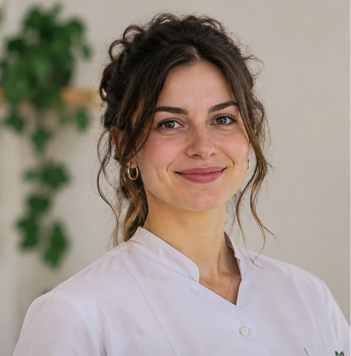

01
Individuálna
terapia
Bezpečný priestor na rozhovor o tom, čo prežívate. Spoločne môžete hľadať nové porozumenie aj praktické kroky.
Spoznajte odborníkovPsychologické centrum
Nájdite si podporu, ktorá rešpektuje vašu situáciu aj vaše tempo. Spoločne sa pozrieme na to, čo práve potrebujete.
Začať rozhovor je dosť.
Nemusíte mať všetko vyriešené.
Každý príbeh je iný
Vyberte si oblasť, ktorá je vám najbližšia. Ak si nie ste istí, je v poriadku začať aj bez presnej odpovede.
Bezpečný priestor na rozhovor o tom, čo prežívate. Spoločne môžete hľadať nové porozumenie aj praktické kroky.
Spoznajte odborníkovNeutrálne miesto, kde dostanú priestor obaja. Učte sa spolu hovoriť o tom, čo je vo vašom vzťahu dôležité.
Spoznajte odborníkovCitlivá podpora pre dieťa aj rodiča. Pomáhame porozumieť tomu, čo dieťa prežíva, a hľadať možnosti pomoci.
Spoznajte odborníkovNie ste si istí, kam patríte? Spolu nájdeme najvhodnejší prvý krok.
Priestor, ktorý patrí vám
Požiadať o pomoc môže byť veľký krok. Nemusíte vedieť, čo presne povedať, ani mať pripravený plán. Na stretnutí začneme tam, kde práve ste.
Psychologické centrum
Bezpečný priestor, rešpektujúci prístup a jasné informácie na každom kroku.
Cena za hodinu konzultácie
Mgr. Natália Kováčová10 €
PhDr. Martina Novotná8 €
Mgr. Tomáš Hruška10 €
Mgr. Martin Kováč10 €
Mgr. Lucia Novotná10 €
Mgr. Petra Šimková8,50 €
Mgr. Tomáš Bielik10 €
Mgr. Veronika Poláková9 €
4,8 / 5
Ukážkové texty na nahradenie skutočnými recenziami.
★★★★★„Super, odporúčam.“
Anonymne
★★★★★„Najlepšie poradenstvo, ktoré som navštívila. Oplatí sa cenovo.“
Anonymne
★★★★★„Veľmi príjemné a pokojné prostredie.“
Anonymne
★★★★★„Oceňujem citlivý prístup a možnosť hovoriť vlastným tempom.“
Anonymne
★★★★★„Všetko mi bolo zrozumiteľne vysvetlené.“
Anonymne
★★★★★„Komunikácia pri dohadovaní termínu bola jednoduchá.“
Anonymne
★★★★★„Cítila som sa vypočutá a rešpektovaná.“
Anonymne
★★★★★„Páčilo sa mi, že sme postupovali bez zbytočného tlaku.“
Anonymne
★★★★„Stretnutie bolo užitočné, na voľný termín som však čakala dlhšie.“
Anonymne
★★★★„Prístup bol profesionálny, uvítala by som viac možností termínov.“
Anonymne
Námestie obetí komunizmu 1
010 01 Žilina · pri Mestskom úrade
Bez zbytočných otáznikov
Terapia sa začína rozhovorom. Spoločne zistíte, čo by vám mohlo pomôcť a či vám spôsob práce vyhovuje.
Individuálna, párová alebo detská terapia — začnite tým, čo sa najviac približuje vašej situácii.
Prečítajte si o zameraní a prístupe odborníkov. Dôležité je, aby ste sa pri výbere cítili dobre.
Keď nájdete vhodného odborníka, dohodnite si prvý rozhovor a pýtajte sa na všetko, čo potrebujete vedieť.
Prvé stretnutie nie je záväzok. Je to príležitosť zistiť, či vám spolupráca vyhovuje.
Vyberte si svoju cestu
Prečítajte si o zameraní a prístupe jednotlivých psychológov. Cenu konzultácie nájdete pri každom profile.
Portréty odborníkov sú doplnené.

Mgr.
Individuálna psychologická poradkyňa. V bezpečnom a dôvernom prostredí pomáha porozumieť pocitom, obavám a životným výzvam a hľadať cestu k väčšej pohode a rovnováhe.
PhDr.
Ponúka individuálne konzultácie s dôrazom na porozumenie, rešpekt a potreby každého človeka. Pomáha lepšie porozumieť emóciám a zvládať náročné situácie.
Mgr.
Zameriava sa na podporu duševného zdravia, osobnostný rozvoj a zvládanie pracovných, rodinných či medziľudských vzťahov. Pomáha objavovať silné stránky a nové možnosti.
Mgr.
Pomáha párom znovu nájsť spoločnú reč, otvorene komunikovať a pochopiť potreby toho druhého. Spoločne hľadajú cestu k pevnejšiemu a spokojnejšiemu vzťahu.

Mgr.
Pomáha partnerom obnoviť vzájomné porozumenie a dôveru. Spoločne hľadajú nové možnosti, ako prekonať náročné obdobie alebo ďalej rozvíjať svoj vzťah.
Mgr.
Pomáha deťom porozumieť vlastným pocitom a zvládať náročné situácie v bezpečnom a priateľskom prostredí. Spolu s rodičmi hľadá cesty, ako podporiť ich spokojný vývin.
Mgr.
Podporuje deti, ktoré zápasia so stresom, školou, vzťahmi s rovesníkmi alebo životnými zmenami. V rozhovoroch primeraných veku pomáha rozvíjať zvládanie emócií a sebavedomie.
Mgr.
Pomáha deťom cítiť sa bezpečne a rodičom lepšie porozumieť ich potrebám. Spoločne hľadajú riešenia pre zdravý emocionálny vývin a spokojnejšie rodinné vzťahy.
Prvý krok k stretnutiu
Vyplňte údaje, skontrolujte ich a potvrďte žiadosť.
Prvý krok môže byť malý
Preskúmajte možnosti podpory a vyberte si cestu, ktorá vám dáva zmysel.
Prihlásiť sa na konzultáciu